Mind
Think clearly and stay focused.
Seven weapons, one framework. A personal path to grow across every part of life.
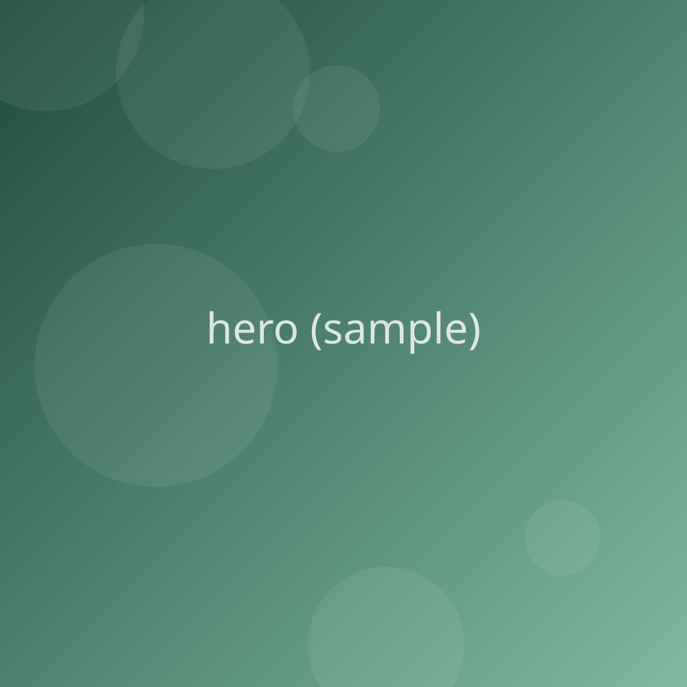
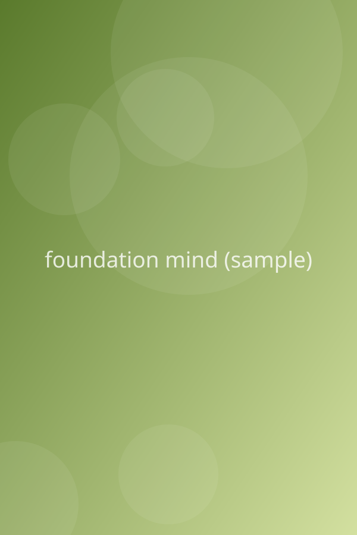
MindFoundation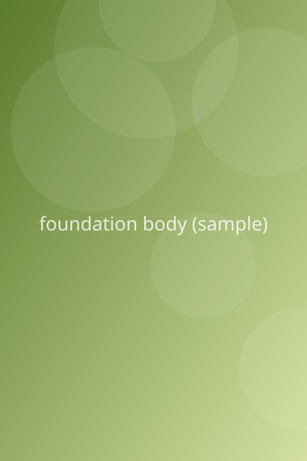
BodyFoundation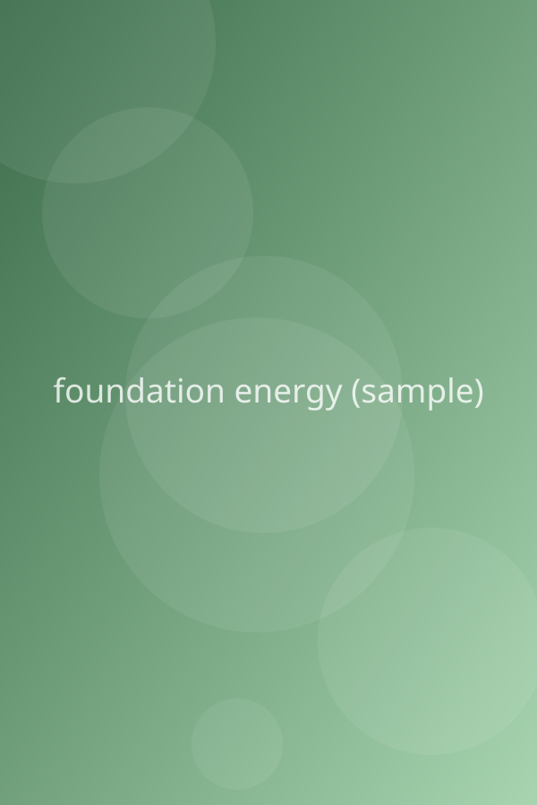
Life EnergyFoundationThree things hold up the rest of the path: a clear mind, a healthy body and steady life energy.
Think clearly and stay focused.
Keep the machine strong.
Fuel for everything else.
The tools I use to take on any problem.
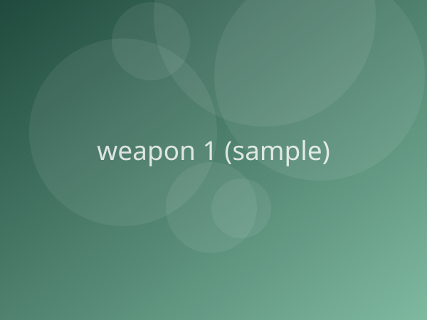
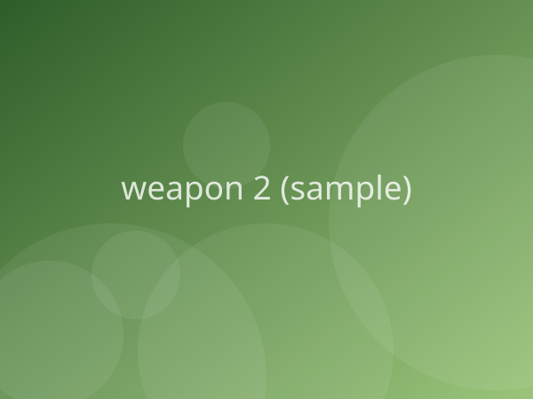
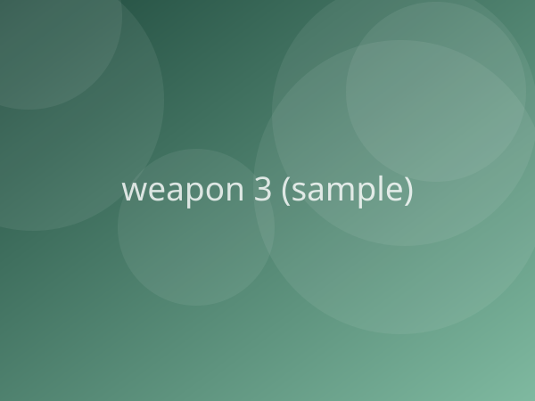
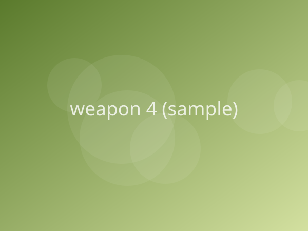
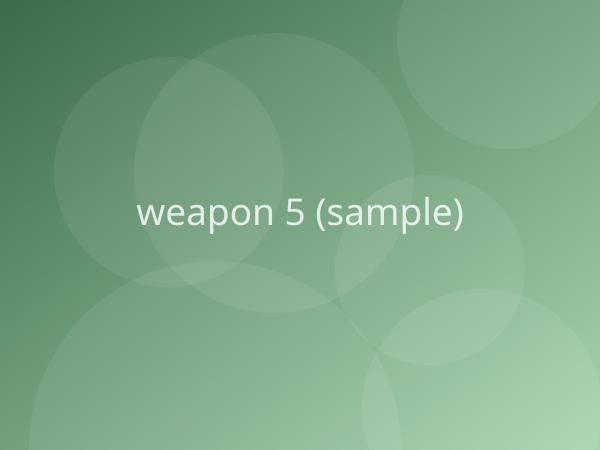
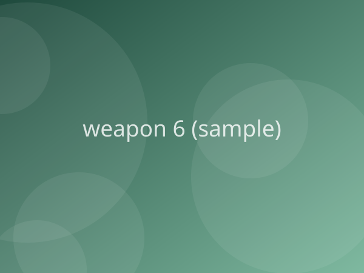
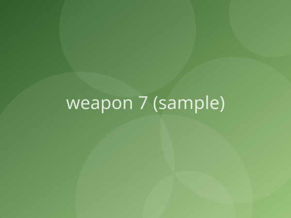
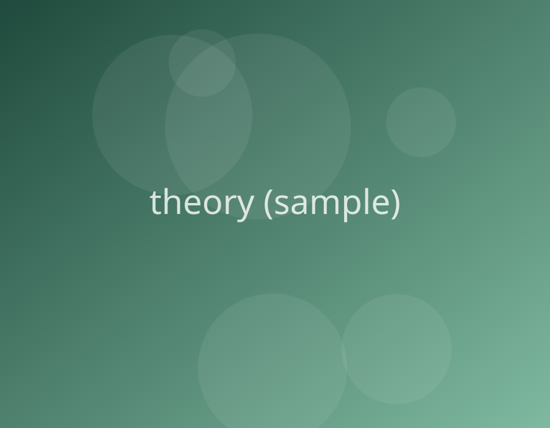
A seven-step cycle for learning anything, from first try to bigger scale.
Ten areas I measure to see how my life is really going.
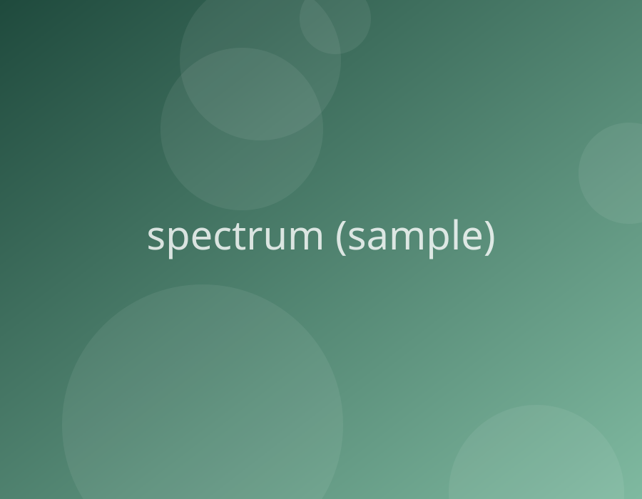
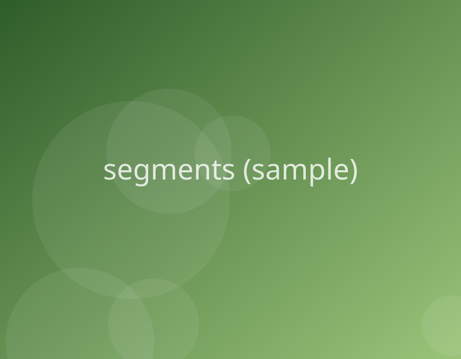
Seven areas that shape how a society works.
The journey towards Krishnaism
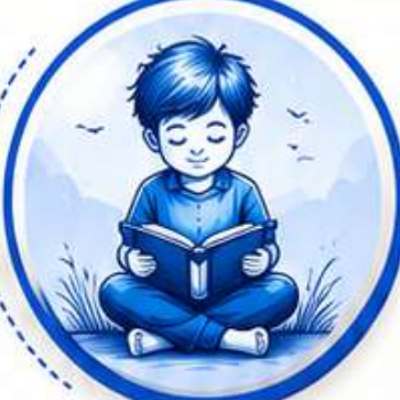
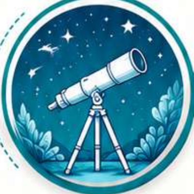
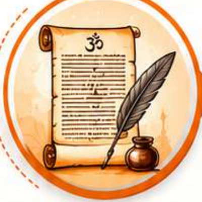
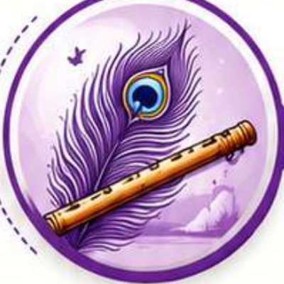
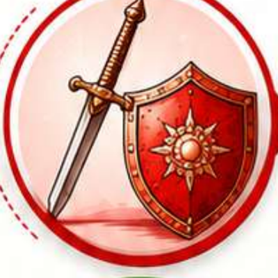
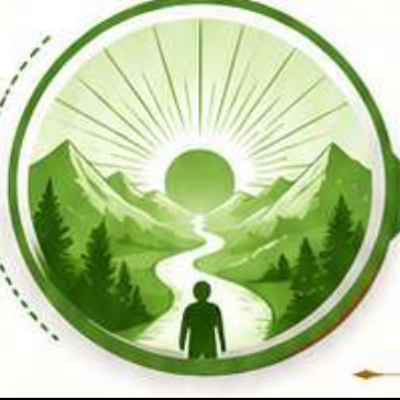